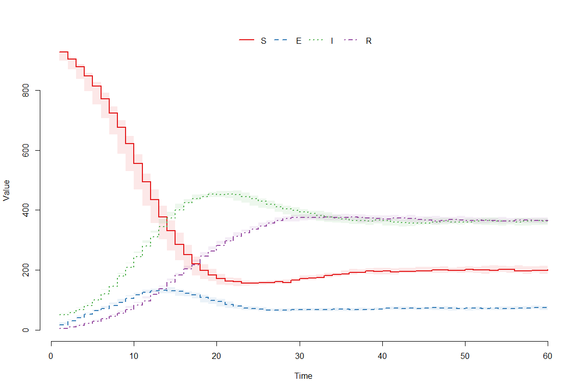

3 Introduction to the model
The model in question, that we use for demonstration purposes, is a stochastic SEIRS model, with four parameters: rate of transmission between each infectious person and each susceptible person \(\beta_M\); transition rate from exposed to infectious \(\gamma_M\); recovery rate from infectious to recovered \(\delta_M\); and a ‘loss of immunity’ rate from recovered to susceptible \(\mu_M\).

Figure 3.1: SEIRS Diagram
Expressed in terms of differential equations, the transitions are \[\begin{align} \frac{dS}{dt} &= -\frac{\beta_M S I}{N} + \mu_M R \\ \frac{dE}{dt} &= -\gamma_M E + \frac{\beta_M S I}{N} \\ \frac{dI}{dt} &= -\delta_M I + \gamma_M E \\ \frac{dR}{dt} &= -\mu_M R + \delta_M I \end{align}\] where \(N\) represents the total population, \(N=S+E+I+R\). For simplicity, we consider a closed population, so that \(N\) is constant.
To generate runs from this model, we use SimInf, a package that provides a framework to conduct data-driven epidemiological modelling in realistic large scale disease spread simulations. Note that the emulatorr package is code-agnostic: although we chose SimInf for this case study, the user of emulatorr is completely free to select the package (and programming language) that most suits them to obtain simulations of their computer model. SimInf requires us to define the transitions, the compartments, and the initial population. If we want multiple repetitions for each choice of parameters, we create a data.frame with identical rows, each of which has the same initial population. Here we will choose \(50\) repetitions per choice of parameters and consider an initial population of \(1000\) of whom \(50\) are infected. Note that if we were to start with one infectious individual, there would a be a significant probability that some runs of the model would not show an epidemic (since it could happen that the only infectious person recovers before infecting other people). Choosing a relatively high number of initial infectious people helps us circumvent any problems that would come from bimodality and keep the tutorial simple. Bimodality will be dealt in the more advanced case studies.
compartments <- c("S","E","I","R")
transitions <- c(
"S -> beta*I*S/(S+I+E+R) -> E",
"E -> gamma*E -> I",
"I -> delta*I -> R",
"R -> mu*R -> S"
)
nreps <- 50
u0 <- data.frame(
S = rep(950, nreps),
E = rep(0, nreps),
I = rep(50, nreps),
R = rep(0, nreps)
)We select parameter values and parse the model using the function mparse, which takes transitions, compartments, initial values of each compartment, parameter values and the time span to simulate a trajectory. We then run the model and plot the trajectories of interest.
params <- c(beta = 0.5, gamma = 0.5, delta = 0.1, mu = 0.1)
model <- mparse(transitions = transitions, compartments = compartments, u0 = u0, gdata = params, tspan = 1:60)
result = run(model)
plot(result)
In order to extract the relevant information from the data provided by the SimInf run, a helper function getOutputs has been included in this document. It takes a data.frame of parameter sets and a list of times, and returns a data.frame of the results. We then create a data.frame outputs by binding the parameter values and the results obtained.
points <- expand.grid(list(beta = c(0.4, 0.6),
gamma = c(0.4, 0.6),
delta = c(0.05, 0.15),
mu = c(0.05, 0.15)
))
results <- getOutputs(points, seq(10,30,by=5))
outputs <- data.frame(cbind(points, results))
head(outputs)
#> beta gamma delta mu I10 I15 I20 I25 I30 EV10 EV15
#> 1 0.4 0.4 0.05 0.05 214.88 397.56 540.64 577.68 546.60 6.170862 8.104032
#> 2 0.6 0.4 0.05 0.05 364.64 596.34 630.88 573.80 515.44 8.492178 5.653273
#> 3 0.4 0.6 0.05 0.05 275.84 481.94 590.68 582.94 537.52 7.783912 8.802715
#> 4 0.6 0.6 0.05 0.05 464.18 659.30 633.34 565.04 516.92 8.266060 3.790435
#> 5 0.4 0.4 0.15 0.05 107.34 162.48 206.52 227.12 216.44 4.316958 7.271891
#> 6 0.6 0.4 0.15 0.05 194.22 294.94 311.72 260.30 208.18 6.906690 6.513129
#> EV20 EV25 EV30
#> 1 5.234158 5.035554 3.911208
#> 2 4.876691 4.029312 5.004167
#> 3 4.400205 3.693073 3.350278
#> 4 3.892476 4.220118 5.284725
#> 5 7.943447 4.526565 4.080371
#> 6 4.720728 4.743206 4.797141Each row of outputs corresponds to a parameter set and contains information regarding the number of infectious individuals \(I\) for that set. Each row of column \(I10\) (resp. \(I15, I20, I25, I30\)) contains the mean value of \(I\) at time \(10\) (resp. \(15, 20, 25, 30\)) for the \(50\) runs of the relative parameter set. Similarly, columns \(EV10, EV15, EV20, EV25, EV30\) provide a measure of the
ensemble variability
for each parameter set, at each desidered time: this is defined here as the standard deviation of the \(50\) runs, plus \(3\%\) of the range of the runs. The trained emulators outputs will be estimates of the means, while the ensemble variability will be used to quantify the uncertainty of such estimates.
Before we tackle the emulation, we need a set of wave0 data. For this, we define a set of ranges for the parameters, and generate parameter sets using a Latin Hypercube design (see fig. 3.2 for a Latin hypercube example in two dimensions). We will run the model over \(80\) parameter sets; \(40\) of these will be used for training while the other \(40\) will form the validation set for the emulators.

Figure 3.2: An example of Latin hypercube in two dimensions: there is only one sample point in each row and each column.
Through the function maxminLHS we create two hypercube designs with 40 parameter sets each: one to train emulators and one to validate them.
ranges <- list(
beta = c(0.2, 0.8),
gamma = c(0.2, 1),
delta = c(0.1, 0.5),
mu = c(0.1, 0.5)
)
pts_train <- 2*(maximinLHS(40, 4)-1/2)
pts_valid <- 2*(maximinLHS(40, 4)-1/2)
r_centers <- map_dbl(ranges, ~(.[2]+.[1])/2)
r_scales <- map_dbl(ranges, ~(.[2]-.[1])/2)
pts_train <- data.frame(t(apply(pts_train, 1, function(x) x*r_scales + r_centers)))
pts_valid <- data.frame(t(apply(pts_valid, 1, function(x) x*r_scales + r_centers)))
pts <- rbind(pts_train, pts_valid)
head(pts)
#> beta gamma delta mu
#> 1 0.7253858 0.5757375 0.4098635 0.3173502
#> 2 0.4563490 0.4547064 0.3612369 0.2629990
#> 3 0.3805118 0.5178988 0.2539448 0.3085176
#> 4 0.5078035 0.3498551 0.3527162 0.2034571
#> 5 0.4844859 0.6493015 0.3242757 0.3799582
#> 6 0.4068807 0.8537545 0.1923016 0.1318259Note that the first time we create pts_train (or pts_valid), we get \(40\) parameter sets where each parameter value is distributed on \([-1,1]\). This is not exactly what we need, since each parameter has a different range. We therefore define r_centers (resp. r_scales) which contains the midpoint (resp. the size) of the range of each parameter. Using these two pieces of information, we re-center and re-scale pts_train (and pts_valid).
We obtain the model runs for the parameter sets in pts through the getOutputs function. We bind the parameter sets in pts to the model runs and save everything in the data.frame wave0.
wave0 <- data.frame(cbind(pts,getOutputs(pts, seq(10,30,by=5)))) %>%
setNames(c(names(ranges), paste0("I",seq(10,30,by=5)),paste0('EV',seq(10,30,by=5))))
head(wave0)
#> beta gamma delta mu I10 I15 I20 I25 I30
#> 1 0.7253858 0.5757375 0.4098635 0.3173502 89.92 116.94 136.48 145.22 146.32
#> 2 0.4563490 0.4547064 0.3612369 0.2629990 37.42 41.98 47.34 48.88 49.26
#> 3 0.3805118 0.5178988 0.2539448 0.3085176 56.02 69.12 82.44 96.48 106.96
#> 4 0.5078035 0.3498551 0.3527162 0.2034571 41.38 49.10 58.82 64.18 70.02
#> 5 0.4844859 0.6493015 0.3242757 0.3799582 62.40 80.08 93.84 103.78 117.82
#> 6 0.4068807 0.8537545 0.1923016 0.1318259 120.92 171.66 206.74 214.72 216.44
#> EV10 EV15 EV20 EV25 EV30
#> 1 5.673286 6.317488 5.603514 3.990735 5.043979
#> 2 2.954996 3.237577 3.673379 3.731541 3.725365
#> 3 3.649543 4.682559 5.332532 5.781993 6.368925
#> 4 2.685131 3.152139 4.407604 5.237344 4.687587
#> 5 4.272857 4.789298 5.847034 5.572719 5.413788
#> 6 5.806106 6.054552 5.866510 4.886092 4.979186Finally, we split wave0 into two parts: the training set, on which we will train the emulators, and a validation set, which will be used to do diagnostics of the emulators.